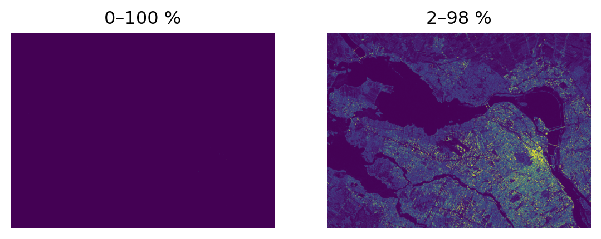
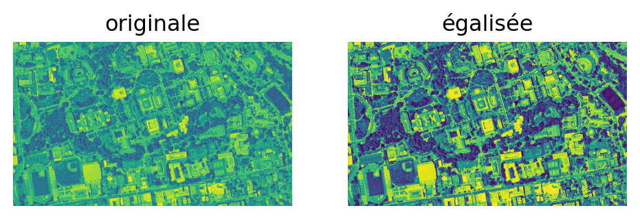
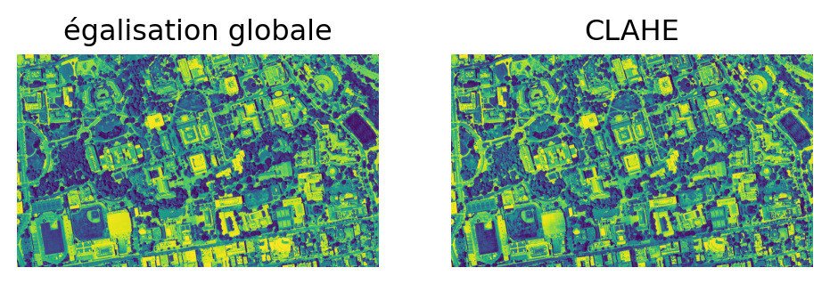
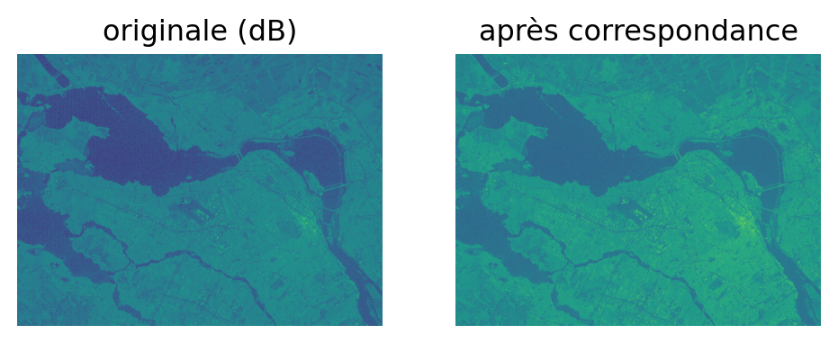
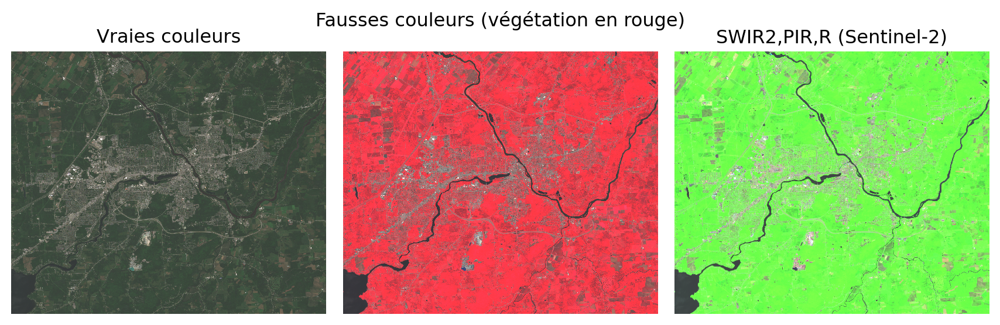
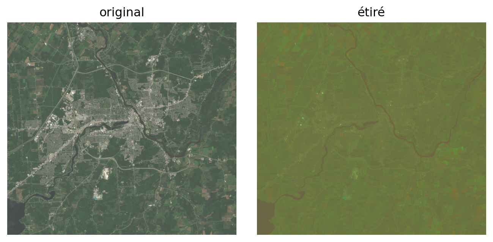
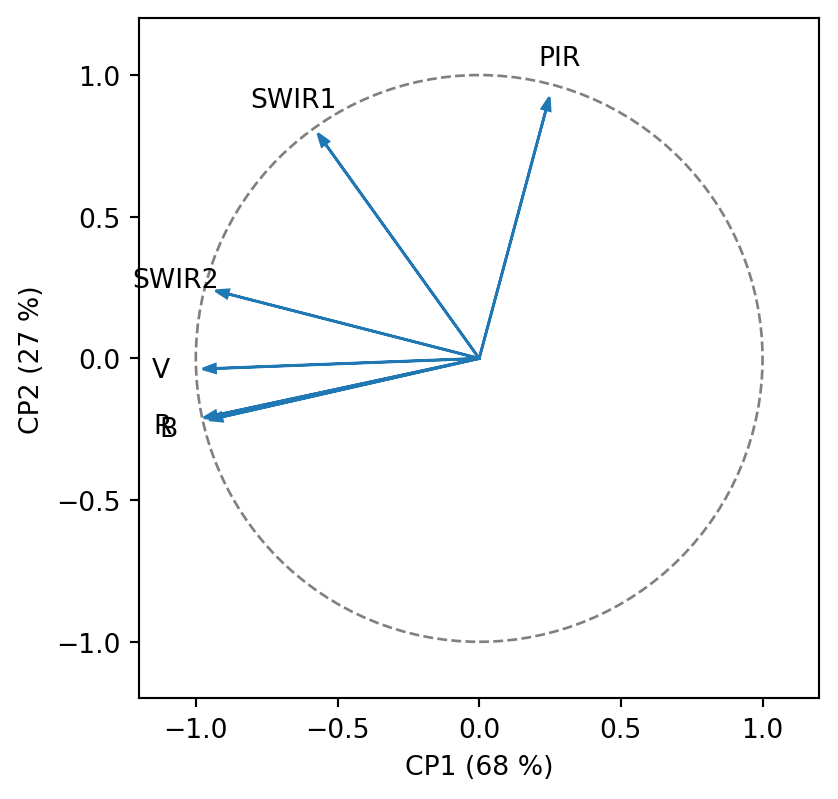

import rioxarray as rxr, numpy as np, matplotlib.pyplot as plt
img = rxr.open_rasterio('../RGBNIR_of_S2A.tif') # ordre B,V,R,PIR
img_s2 = rxr.open_rasterio('../sentinel2.tif') # 12 bandes Sentinel-2
img_rgb = rxr.open_rasterio('../berkeley.jpg') # photo RVB
sar = rxr.open_rasterio('../SAR.tif').sel(band=1).values # radar (1 bande)Réhaussement et visualisation d’images
Chapitre 2 — Traitement d’images satellites avec Python
Foucher, Apparicio, Bouroubi, Germain, Clabaut
Objectifs
- Exploiter les statistiques d’une image pour la visualisation
- Calculer et lire un histogramme
- Appliquer une transformation linéaire ou non linéaire
- Comprendre les composés colorés
- Explorer une image sur une carte web interactive (
leafmap)
Bibliothèques et données
rasterio/rioxarray/xarray: lecture et statistiquesscikit-image(exposure) : égalisation, CLAHE, correspondance d’histogrammesmatplotlib: affichage, palettes, composés colorés- 4 images utilisées ce chapitre :
RGBNIR_of_S2A.tif,sentinel2.tif,berkeley.jpg,SAR.tif
Visualiser en Python
matplotlib= la bibliothèque de base (imshowpour une image)- Image à 3 bandes → valeurs normalisées (0–1) ou
vmin/vmax - Ordre des dimensions attendu : hauteur, largeur, bande
rioxarray/xarrayajoutent les coordonnées cartographiques
Visualisation sur le Web — leafmap
- Affichages
matplotlib= statiques ;leafmapplace l’image sur une carte glissante - Interface unifiée au-dessus de
folium/ipyleaflet: zoom, fond de carte split_map: comparateur à volet glissant entre deux visualisations
Carte JavaScript : interactive dans un notebook (Colab) ou en HTML — jamais dans le PDF. Cellule non exécutée ici (eval: false).
Statistiques d’une image
- min / max, moyenne, écart-type
- quantiles et percentiles (bornes robustes)
- à calculer par bande
- guident le choix de la transformation d’affichage
<xarray.DataArray (quantile: 3, band: 3)> Size: 72B
array([[1215., 1356., 1188.],
[1317., 1587., 1316.],
[2236., 2443., 2473.]])
Coordinates:
* band (band) int64 24B 2 3 4
* quantile (quantile) float64 24B 0.025 0.5 0.975xarray.DataArray
- quantile: 3
- band: 3
- 1.215e+03 1.356e+03 1.188e+03 ... 2.236e+03 2.443e+03 2.473e+03
array([[1215., 1356., 1188.], [1317., 1587., 1316.], [2236., 2443., 2473.]]) - band(band)int642 3 4
array([2, 3, 4])
- quantile(quantile)float640.025 0.5 0.975
array([0.025, 0.5 , 0.975])
- bandPandasIndex
PandasIndex(Index([2, 3, 4], dtype='int64', name='band'))
- quantilePandasIndex
PandasIndex(Index([0.025, 0.5, 0.975], dtype='float64', name='quantile'))
Histogramme

Réhaussement linéaire
Remapper la dynamique vers l’intervalle cible :
\[ v' = \frac{v - min_0}{max_0 - min_0}\,(max_1 - min_1) + min_1 \]
- attention à la dynamique cible (8 bits → 0–255)
- préserver la valeur no data
- calculer en
float
Histogrammes asymétriques : les percentiles
Cas des images SAR (longue queue) → borner avec des percentiles :
valid = (sar != -999.0) & (sar > 0) # masque no_data
v = sar[valid]
p = {q: np.percentile(v, q) for q in (0, 2, 98, 100)}
fig, ax = plt.subplots(1, 2, figsize=(7, 3))
ax[0].imshow(sar, vmin=p[0], vmax=p[100]); ax[0].set_title("0–100 %"); ax[0].axis('off')
ax[1].imshow(sar, vmin=p[2], vmax=p[98]); ax[1].set_title("2–98 %"); ax[1].axis('off')
plt.show()
Réhaussement non linéaire — décibels
Pour le radar : passage en dB (10·log10) → distribution ~gaussienne.
Réhaussement gamma (loi de puissance)
\[ j = \left(\frac{i}{i_{max}}\right)^{\gamma} \times j_{max} \]
- \(\gamma < 1\) éclaircit les tons foncés (image sous-exposée)
- \(\gamma > 1\) assombrit les tons clairs (image surexposée) ; \(\gamma=1\) = identité
- transformation non symétrique entre ombres et hautes lumières
Égalisation d’histogramme
- transformer les valeurs pour que la CDF devienne quasi linéaire
- but : rendre les niveaux équiprobables (histogramme aplati)
- révèle des détails dans les zones sombres
from skimage import exposure
gray = img_rgb.data.transpose(1, 2, 0).mean(axis=2) / 255.0
img_eq = exposure.equalize_hist(gray)
fig, ax = plt.subplots(1, 2, figsize=(6, 3))
ax[0].imshow(gray, vmin=0, vmax=1); ax[0].set_title("originale"); ax[0].axis('off')
ax[1].imshow(img_eq, vmin=0, vmax=1); ax[1].set_title("égalisée"); ax[1].axis('off')
plt.show()
Égalisation adaptative (CLAHE)
- l’égalisation globale calcule une seule CDF pour toute l’image
- CLAHE : découpe en tuiles, égalise chacune, plafond
clip_limitanti-bruit - fait ressortir les détails locaux (ombres, textures) sans saturer le reste

Correspondance d’histogrammes
- généralise l’égalisation : faire correspondre la CDF source à une CDF cible arbitraire
- utile pour harmoniser deux acquisitions (p. ex. mosaïquage de scènes adjacentes)
skimage.exposure.match_histograms
from skimage.exposure import match_histograms
source = np.log10(sar)
cible = np.random.normal(loc=source.mean(), scale=source.std(), size=source.shape)
source_matched = match_histograms(source, cible)
fig, ax = plt.subplots(1, 2, figsize=(6, 3))
ax[0].imshow(source); ax[0].set_title("originale (dB)"); ax[0].axis('off')
ax[1].imshow(source_matched); ax[1].set_title("après correspondance"); ax[1].axis('off')
plt.show()
Palettes de couleur

Composés colorés
- Combiner des bandes = choisir un composé ; chaque choix révèle des propriétés différentes
- Sentinel-2 : 12 bandes → nombreux composés possibles selon l’application
RGBNIR_of_S2A.tif(B,V,R,PIR) → vraies vs fausses couleurs
fig, ax = plt.subplots(1, 3, figsize=(9, 3))
img.sel(band=[3, 2, 1]).plot.imshow(vmin=86, vmax=5000, ax=ax[0])
ax[0].set_title("Vraies couleurs"); ax[0].axis('off')
img.sel(band=[4, 3, 2]).plot.imshow(vmin=86, vmax=5000, ax=ax[1])
ax[1].set_title("Fausses couleurs (végétation en rouge)"); ax[1].axis('off')
img_s2.sel(band=[12, 8, 4]).plot.imshow(vmin=86, vmax=4000, ax=ax[2])
ax[2].set_title("SWIR2,PIR,R (Sentinel-2)"); ax[2].axis('off')
plt.tight_layout(); plt.show()
Étirement par décorrélation
- bandes multispectrales souvent fortement corrélées → composés peu contrastés
- on décorrèle dans l’espace ACP, on égalise la variance, puis retour à l’espace original
- conserve les teintes relatives tout en maximisant le contraste
def decorrelation_stretch(im):
X = im.reshape(im.shape[0], -1).astype(float)
X -= X.mean(axis=1, keepdims=True)
valeurs, vecteurs = np.linalg.eigh(np.cov(X))
X_pca = (vecteurs.T @ X) / np.sqrt(valeurs)[:, None]
X_stretch = vecteurs @ X_pca
X_stretch -= X_stretch.min(axis=1, keepdims=True)
X_stretch /= X_stretch.max(axis=1, keepdims=True)
return X_stretch.reshape(im.shape)
composite = img_s2.sel(band=[4, 3, 2]).data
fig, ax = plt.subplots(1, 2, figsize=(7, 3.3))
ax[0].imshow(np.clip(composite.transpose(1, 2, 0) / 4000.0, 0, 1)); ax[0].set_title("original"); ax[0].axis('off')
ax[1].imshow(decorrelation_stretch(composite).transpose(1, 2, 0)); ax[1].set_title("étiré"); ax[1].axis('off')
plt.tight_layout(); plt.show()
Cercle des corrélations (ACP)
- Les vecteurs propres disent comment chaque bande pèse dans chaque composante
- Loadings = vecteur propre × racine de la valeur propre = corrélation bande–composante
- Flèche près du cercle = bien représentée ; flèches proches = bandes corrélées
bandes = [2, 3, 4, 8, 11, 12]; noms = ['B', 'V', 'R', 'PIR', 'SWIR1', 'SWIR2']
X = img_s2.sel(band=bandes).data.reshape(len(bandes), -1).astype(float)
X = X[:, ~np.isnan(X).any(axis=0)]
X = (X - X.mean(1, keepdims=True)) / X.std(1, keepdims=True)
val, vec = np.linalg.eigh(np.corrcoef(X)); o = np.argsort(val)[::-1]
L = vec[:, o] * np.sqrt(val[o]); pct = 100 * val[o] / val.sum()
fig, ax = plt.subplots(figsize=(4.6, 4.6))
ax.add_patch(plt.Circle((0, 0), 1, fill=False, color='grey', ls='--'))
for i, n in enumerate(noms):
ax.arrow(0, 0, L[i, 0], L[i, 1], head_width=0.03, length_includes_head=True, color='tab:blue')
ax.text(L[i, 0] * 1.15, L[i, 1] * 1.15, n, ha='center', va='center')
ax.set_xlim(-1.2, 1.2); ax.set_ylim(-1.2, 1.2); ax.set_aspect('equal')
ax.set_xlabel(f"CP1 ({pct[0]:.0f} %)"); ax.set_ylabel(f"CP2 ({pct[1]:.0f} %)")
plt.show()
CP1 = luminosité globale ; CP2 oppose PIR / SWIR1 au visible (végétation).
Points clés
- Le réhaussement améliore l’affichage sans modifier la donnée
- Percentiles (2–98 %) = bornes robustes pour histogrammes asymétriques
- Non linéaire : dB, gamma, égalisation (globale, CLAHE), correspondance d’histogrammes
- Palettes perceptuelles (
viridis), composés colorés et étirement par décorrélation révèlent l’information leafmap: exploration interactive d’une image sur une carte web (notebook / HTML)
À vous de jouer
- Comparez CLAHE et égalisation globale : quand la CLAHE révèle-t-elle plus de détails ?
- Faites correspondre l’histogramme de la bande PIR à celui d’une autre scène
- Appliquez l’étirement par décorrélation sur un composé SWIR2, PIR, R
Des questions ?
Chapitre suivant : Transformations spectrales
Traitement d’images satellites avec Python